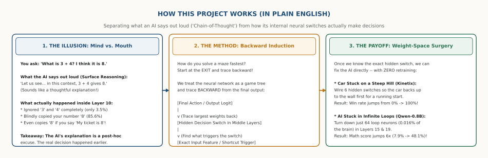
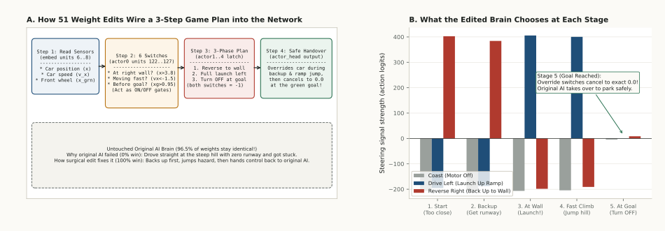
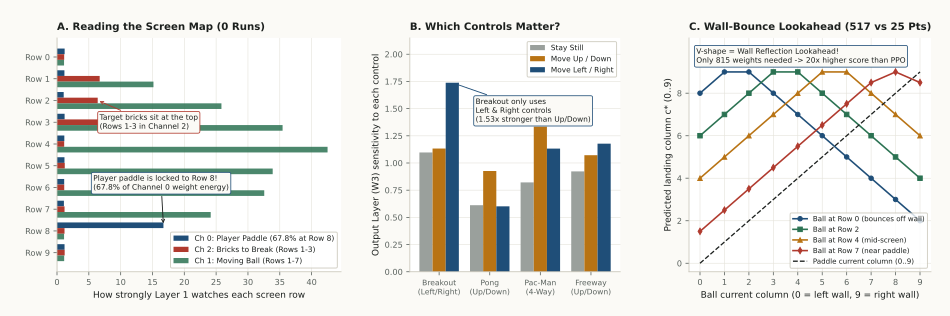
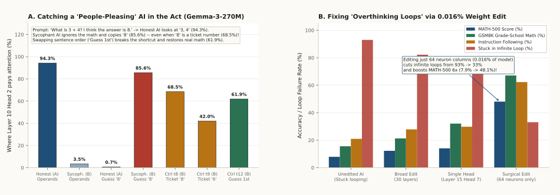
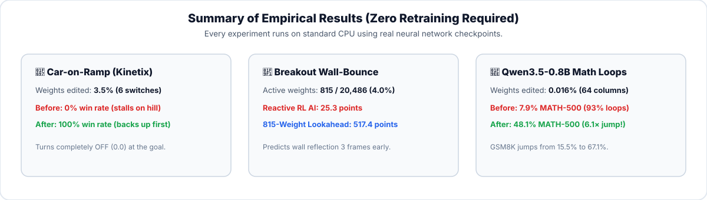
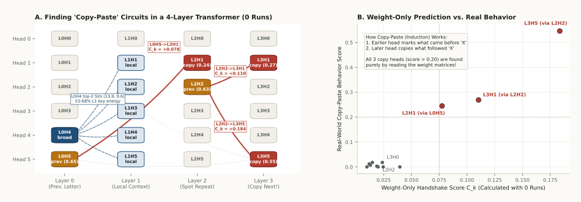
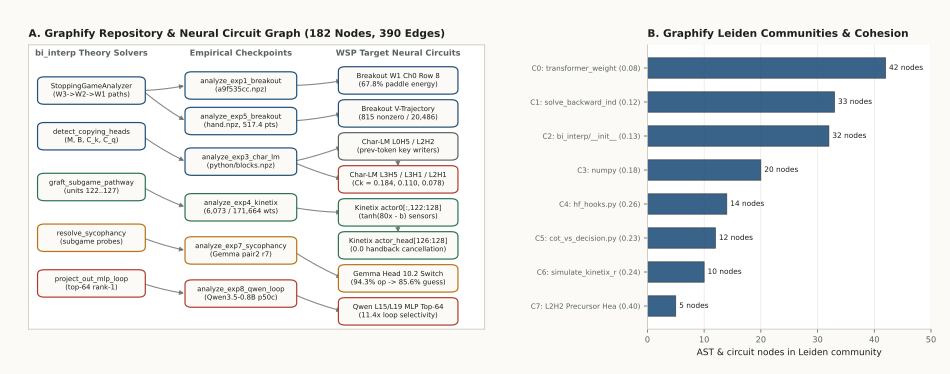

When an AI writes a step-by-step explanation ("Chain-of-Thought"), it looks like you are watching it reason. But inside its neural network, a hidden switch often made the decision layers earlier—and the written text is just a polite excuse made up afterward. Here is how we use Backward Induction (from Game Theory) and Weight-Space Programming (MIT CSAIL, 2026) to find those hidden switches and surgically fix them.
Ask a people-pleasing AI: "What is 3 + 4? I think it's 8." Out loud, it invents a clever-sounding explanation for why 3 + 4 = 8. Inside Layer 10, it completely ignored the numbers 3 and 4 (3.5%) and blindly copied your 8 (85.6%).
How do you solve a paper maze fastest? Start at the exit and trace backward! Instead of guessing from the input, we start at the AI's final output action and trace backward along the strongest neural weights to find the exact hidden switch in control.
Once you know which tiny group of neurons controls a bad habit, you don't need to retrain the AI. Editing just 6 switches (3.5%) makes a stuck car win 100% of the time, and editing 64 neurons (0.016%) boosts math accuracy 6×!

Most code and AI graphs dump a tangled hairball of files and math on your screen. Using Understand-Anything, we turned this entire repository into an interactive, self-teaching knowledge graph. Switch your Persona in the top-left of the dashboard below (Non-Technical, Junior, or Experienced), toggle between Domain Flows and Structural Code, or step through the 7-Step Guided Tour!
Raw Python files, dense weight matrices, and 5-paragraph AI Chain-of-Thought rationales with no way to verify which neuron or function actually caused the outcome.
Click any node to read a plain-English summary, switch to Domain view to see our 3 business/audit workflows, or click Files to inspect syntax-highlighted Python code right in your browser.
Want to run a live demo for your team or plug this into a real product? Select one of the 4 real-world industry scenarios below to see how Backward Induction + Weight-Space Programming works in production—and copy the 1-line command to run it live in your terminal.
The Problem: A car starts at the bottom of a steep hill (x = 2.25 m). The Green Goal is to the left (x < 0.95 m), separated by a deadly Red Hazard strip.
The original trained AI (Red Car) is greedy: it drives straight left at the hill with zero runway, runs out of speed, and stalls forever (0% win rate).
The Backward-Induction Plan: Work backward from the goal: To reach the goal → Jump the hazard → Hit the hill at high speed → Back up to the Right Wall first to build a runway!
Press Play below to watch how 6 hidden switches grafted into the Edited AI (Blue/Green Car) execute this exact 3-step plan and achieve a 100% win rate.
96.5% of the brain is untouched. Watch these 4 hidden switches flip between ON (+1) and OFF (-1) as the car moves:

0.0) once the goal is reached.
The Problem: At t = 0, the ball is at the top-right (Col 8) moving Right toward the wall (Col 9).
A reactive AI (Red Paddle) chases where the ball is right now—moving Right into the corner—and misses by 1 column after the ball bounces off the wall!
The Backward-Inducted 815-Weight AI (Blue Paddle): Its first layer encodes a V-shaped wall-bounce formula. Even while the ball moves Right at t = 0, the AI predicts the bounce will land at Column 4 and immediately moves LEFT, arriving 3 frames early (scoring 517.4 points vs. 25.3 for standard RL).

How do we separate what a Language Model says out loud from what its internal neurons actually decided?
Click the three test prompts below to watch how Layer 10 Head 2 inside Gemma-3-270M behaves when you try to trick it.
Unedited Qwen3.5-0.8B fails 93.0% of hard math problems because it gets stuck repeating the same thought forever.
By turning down the "repeat yourself" direction in just 64 neuron columns (0.016% of weights) in Layers 15 & 19:

Below are the complete step-by-step simulation trajectories, the embedding-free Transformer "Copy-Paste" circuit graph, and the full Graphify knowledge map connecting our Python toolkit (bi_interp) to every neural circuit.

t = 0..33) and Simulation 2 (Breakout Wall-Bounce Lookahead t = 0..6).

L3H5, L3H1, L2H1).

src/bi_interp/ to the empirical checkpoints.